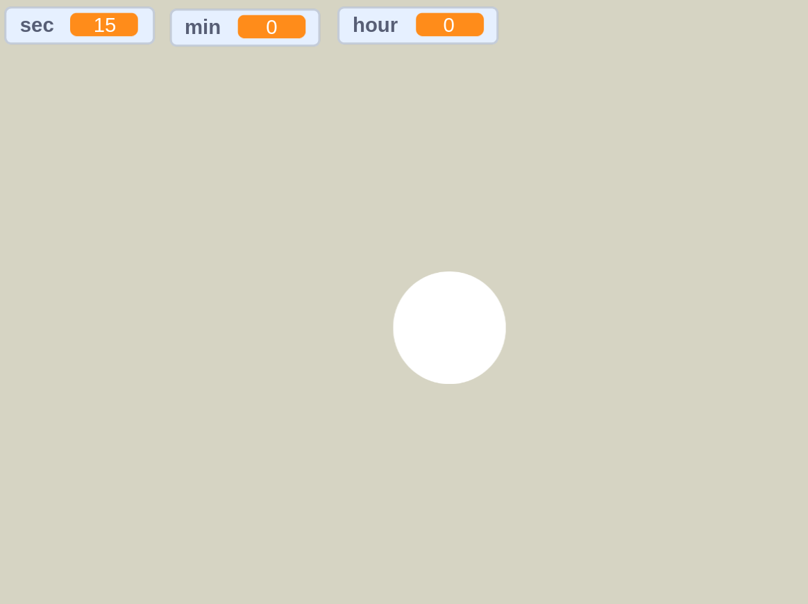

Чтобы использовать программное обеспечение от By ROlil Studio под назанием UNMinerTool вам понадобится:
• Программа Scratch или её онлайн редактор
• FreeMouseClicker или любой другой кликер
Далее когда вы установите все необходимые программы и скачаете необходимые файлы мы можем запускать нашу программу, но как её правильно запустить?
Чтобы запустить программу UNMinerTool нам нужно открыть программу Scratch или её онлайн редактор, далее загрузить файл UNMinerTool.sb3 в нашу программу как проект, далее после загрузки проекта UNMinerTool нам надо будет нажать на зелёный флаг в проекте. Далее включаем кликер на любую задержку перед кликом (рекомендуем 1 клик в секунду) и наводимся на сцену проекта.
Теперь программа UNMinerTool работает и не один майнер не включится пока вы отошли от компьютера чтобы заворить себе чай или поесть!
В программе имеется таймер того, сколько времени программа была включена (чтобы понять на сколько времени мы отошли от компьютера). Ниже мы закрепили изображение работоющей программы чтобы вы понимали получилось у вас её запустить или нет
Мы надеемся что вам понравится наша программа! Вы можете предложить идеи и связаться с нами с помощи ссылок ниже